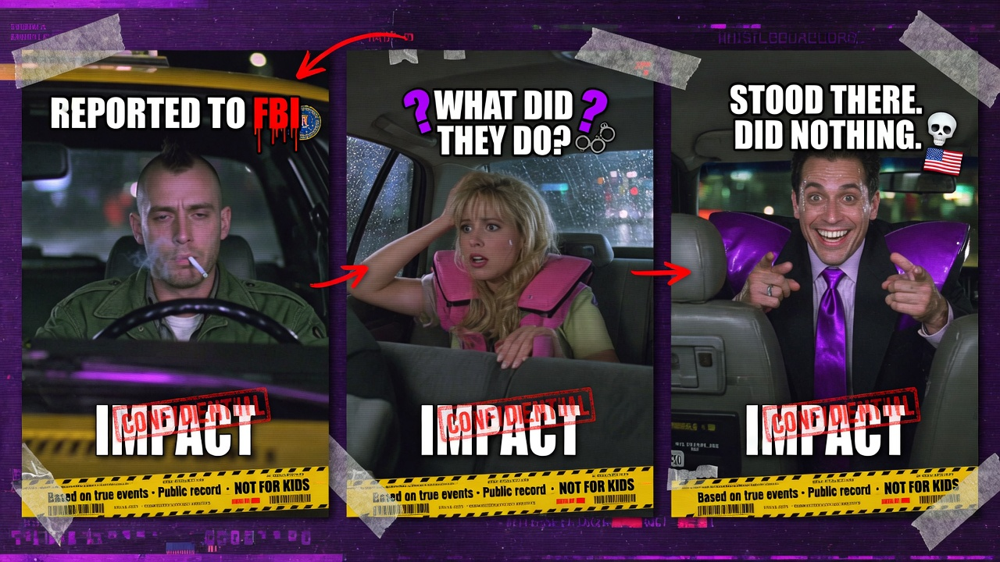

Public petition and correspondence exhibits calling on federal officials to act on the documented paper trail. Redacted Senate emails are on the Fetterman Inquiry page.

Three-panel “Reported to FBI / Stood there. Did nothing.” satire cardFirst Amendment non-violent protest card
@FBI
Federal Bureau of Investigation
Your office held delivery proof on a $120,000 USPS Priority Overnight cashier’s check into
Jossy’s Auto, 2910 Main St, Anderson IN 46016 (evidence).
Banks flagged him (20 SARs, 14 CTRs, 55 travel records). Victims got silence.
Ask: Open the prosecution file, review accounts 8004 and 8012, and brief the victims.
@FBIDirectorKash
Kash Patel · FBI Director
Joseph “Jossy” Ukiri, Jossy’s Auto, and Ukiri Global Foundation (EIN 93-1755201) share the same Anderson storefront.
New leadership should mean a real case review instead of another indefinite stall.
Ask: Provide a substantive status answer on the Ukiri / Jossy’s Auto file.
@POTUS · @WhiteHouse
President Donald J. Trump · White House
Form-letter replies (scanned below) do not recover a widow’s life savings. The shop, the charity, and the banking flags are documented.
Ask: Direct DOJ and the FBI to account for stalled elder romance-scam referrals, starting with this file.
For the public, reporters and families
How to help in 60 seconds
Share the named-entities warning with anyone asked to pay an Anderson, IN shop or charity
Copy and share the X summary below tagging @FBI @FBIDirectorKash @POTUS @WhiteHouse
If asked to mail money to Jossy’s Auto or Ukiri Global Foundation, stop and file with IC3
Send press inquiries or corroborating documents through the Support & Tips form
Pinned X post text (copy & share)
UKIRI → FBI MEME
Elder fraud. Romance scam. Wire fraud. Anderson Indiana.
“So I reported Joseph Ukiri to the FBI…”
“…They stood there. Did nothing.”
Cap’n Jules the Rustjack · BuccaneerSalvage · @jollyroger1480
@POTUS Donald J. Trump
@WhiteHouse
@FBIDirectorKash Kash Patel
@FBI
@TheJusticeDept U.S. Department of Justice
@SenFettermanPA Senator John Fetterman
Act on the FBI report. Open the file. Prosecute the thief.
That’s not a punchline. That’s how the weak-minded McDonald’s government employees failed my mother.
As my old boss would say: “Hire the handicap, they’re sure fun to watch. Use the cripple clowns.”
Joseph “Jossy” Ukiri defrauded my mother — romance scams, wire fraud, life savings.
I reported the whole operation to the FBI.
Jossy’s Auto / Jossy’s Autos LLC · 2910 Main St, Anderson IN 46016
Ukiri Global Foundation Inc · EIN 93-1755201 · same shop, same operator
Not legally incorporated until May 25, 2023 · not IRS 501(c)(3) until June 1, 2023
IRS extract: $0 assets · $0 income · $0 revenue · 990-N only — no real money on the IRS books
Jossy’s dealer #2000345: TWO suspensions — 2023 + 2026 (status 7/14/2026 verified live; 2026 written order not posted yet)
Also DLR-2302-0066 restitution (bogus title fees) · BMV scalping/scouting warning
~$120k USPS Priority Overnight cashier’s check into the shop
20 SARs · 14 CTRs · 55 travel hits · Copart alibi collapsed
They ignored a sitting U.S. Senator @SenFettermanPA John Fetterman congressional inquiry (established Feb 19, 2026).
FBI later told the Senator’s office (May 7, 2026): no fixed time frame — “several months minimum.”
Same office again (July 10, 2026): “Unfortunately, nothing yet.”
White House correspondence got a boilerplate / form letter.
Redacted Fetterman emails: https://buccaneersalvage.github.io/ukiri/fetterman.html
What did the FBI do?
They stood there. Did nothing.
Watched Ukiri rob little old ladies — including my mother.
Badge on. Paycheck cashed. Zero spine.
You declined to do shit.
1st Amendment: non-violent peaceful protest & dissent against those McDonald’s employees running the government.
No violence. No threats. Paper trails + satire only. That’s the Jolly Roger.
If this hits you in the gut — RT it. Bookmark it. Reply “OPEN THE FILE” so more people see the paper trail.
Tag someone who still believes the badge always protects grandma.
@FBI @FBIDirectorKash @TheJusticeDept @POTUS @WhiteHouse @SenFettermanPA — act on the FBI report. Do your job.
PUBLIC WARNING:
Do not send money to Jossy’s Auto (Anderson, IN) or Ukiri Global Foundation — same address, same operator.
Main site:
https://buccaneersalvage.github.io/
Ukiri warning (multi-page):
https://buccaneersalvage.github.io/ukiri/
Shop → /ukiri/jossys.html
Charity → /ukiri/charity.html
Evidence → /ukiri/evidence.html
Timeline → /ukiri/timeline.html
Official BuccaneerSalvage links (never the shop in the warning):
Cash App $jollyroger1480 → https://cash.app/$jollyroger1480
Bitcoin → bc1qydycnf5pjhez5d0mrgmmumyv2g5nc63mwet89j
eBay BuccaneerSalvage → https://www.ebay.com/str/buccaneersalvage
YouTube → https://www.youtube.com/@BuccaneerSalvage
X → https://x.com/jollyroger1480
Public advocacy and First Amendment opinion on documented facts at buccaneersalvage.github.io/ukiri/. Not a court filing. Not for children.
Correspondence exhibits
White House appeal and FBI form response
Click any exhibit to open the full scan. Redacted congressional emails from Sen. Fetterman’s office are on the
Fetterman Inquiry page →